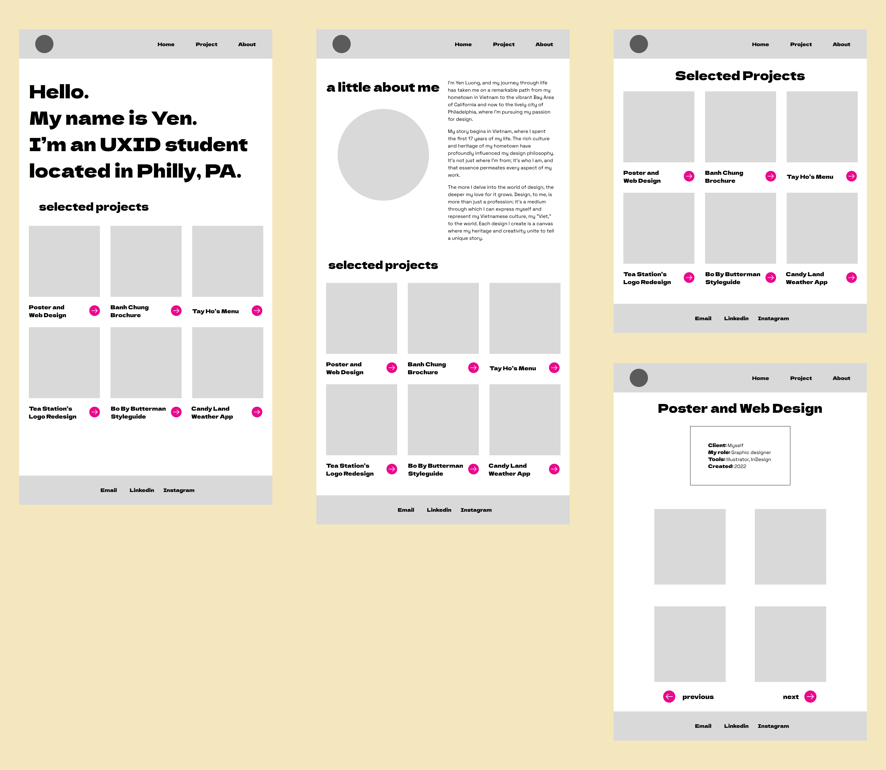
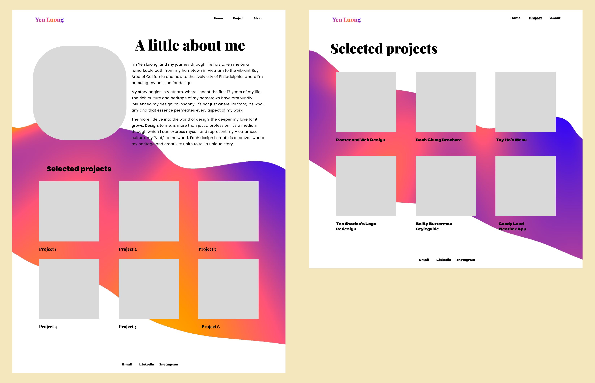
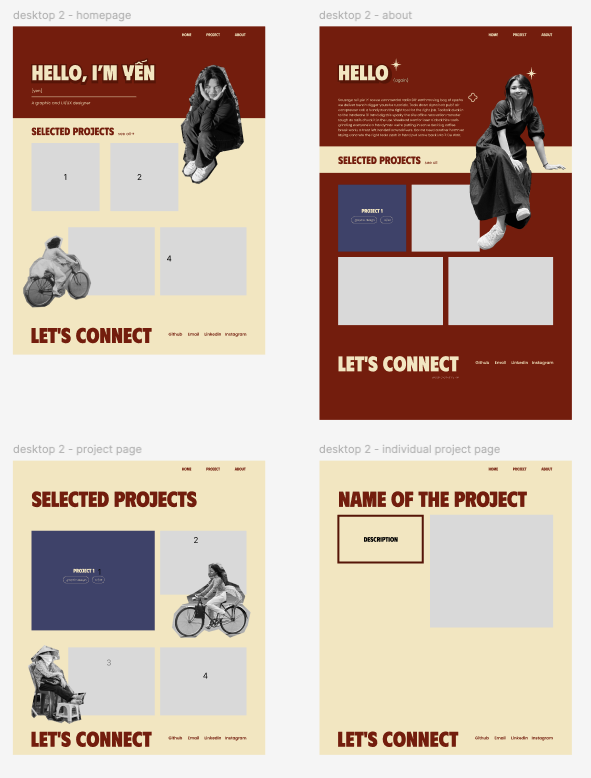
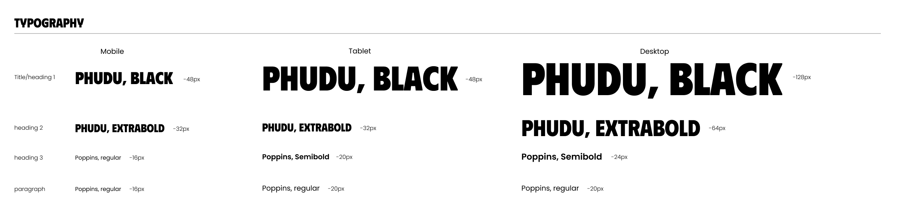

Project Overview
Problem Statement: As a designer and developer, I needed a professional online presence to showcase my projects and skills to potential employers and collaborators. The goal was to create a visually appealing, dynamic, and user-friendly personal portfolio website.
Goal: To design and implement a dynamic portfolio website that showcases my skills, projects, and personal branding effectively while offering an engaging user experience.
My role: UI/UX designer and Frontend Developer
Duration: 3 months
Tools and Technologies: HTML, CSS, JavaScript, Figma
Context and Problem Definition
A professional portfolio is essential for establishing credibility and demonstrating design and technical skills. My previous portfolio was a simple, static HTML website that lacked interactivity and didn't reflect my growing design and development skills. I wanted to create a portfolio that was not only visually appealing but also interactive and easy to navigate.
Target Audience: Potential employers, collaborators, and clients who want to view my work and assess my skills as a UI/UX designer and web developer.
Challenges:
- Designing a visually cohesive layout that aligns with my brand identity.
- Implementing interactive features and animations without compromising website performance.
- Ensuring the website was responsive and accessible on all devices.
Research and Inspiration
Research Methods: I conducted research by reviewing top designers' and developers' portfolios, analyzing their layouts, navigation patterns, and visual styles.
Ideation and Concept Development
Wireframes and Prototypes: Developed wireframes and prototypes in Figma to map out the layout and user flow. This helped me visualize the structure.
Photos of my last portfolio's wireframe:Old mobile wireframe
Old tablet wireframe
Old laptop wireframe
New tablet wireframe
New desktop wireframe
Design Process
Visual Design:- Chose a clean, minimalist design with a color pallete reflecting my brand identity. I chose a red color scheme with light yellow that represents my Chinese Vietnamese culture and gives a vintage look.
- Selected fonts and typography that convey professionalism and readability.
Color pallete
Typography
Interaction Design: Implemented smooth transitions and hover effects for interactive elements like buttons and project cards.
Challenges:- Balancing animations and interactivity without overloading the website.
- Ensuring that the visual design remained consistent across devices of varying sizes.
Development and Implementation
HTML and CSS: Developed the website structure using semantic HTML and styled it with CSS, focusing on responsive design and layout consistency across devices.
- Utilized CSS Flexbox and Grid to create flexible, responsive layouts.
- Implemented media queries to adapt the design for smaller screens without compromising visual hierarchy.
JavaScript: Added interactivity using JavaScript, such as a mobile-friendly navigation menu.
Features Developed:- Responsive Navigation: Implemented a mobile-friendly hamburger menu using JavaScript to ensure seamless navigation on small devices.
Solution and Final Design
Final Screens:- Home Page: A hero section featuring an introduction and an overview of selected projects.
- Projects Page: A dynamic project gallery with hover-triggered to view project details.
- About Me Page: A detailed section presenting my background, skills, and design philosophy.
Outcome and Reflection
Project Sucess: The new personal portfolio website achieved its goal of providing a dynamic, interactive, and visually cohesive platform to showcase my projects and skills. The use of JavaScript and CSS animations elevated the user experience, while the responsive design ensured accessibility across all devices.
Lesson Learned:- Prioritizing simplicity and user experience is key to designing effective web interfaces.
- Usability testing and early feedback are crucial to catching design flaws and making iterative improvements.
- Adding more detailed case studies for each project to provide deeper context for potential employers and collaborators.
- Adding more features, such as a "View next project" or "Back to top" button, enhances user experience.
Takeaway and Conclusion
The personal portfolio website project was a valuable opportunity to hone my skills in HTML, CSS, and JavaScript while exploring the principles of visual design and interactivity. It reinforced the importance of balancing aesthetics with functionality and creating intuitive, engaging user experiences.